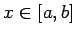
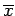

Inhalt Index DeskTop Bronstein

 Optimierung Nichtlineare Optimierung Numerische Suchverfahren
Optimierung Nichtlineare Optimierung Numerische Suchverfahren


Viele Optimierungsverfahren beinhalten als Teilaufgabe die Minimierung einer Funktion f(x) für . Oft ist dabei eine Näherung  für den Minimalpunkt x* ausreichend.